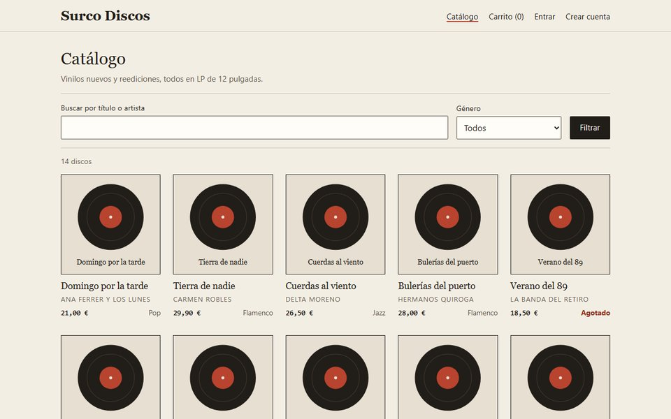

Surco Discos
Desarrollo web en entorno servidor
Tienda online de vinilos con catálogo, buscador, carrito, registro de clientes y panel de administración. Al finalizar un pedido se guarda en una transacción que descuenta el stock, y si falta algún disco no se guarda nada.
- PHP
- MySQL
- PDO
- HTML
- CSS